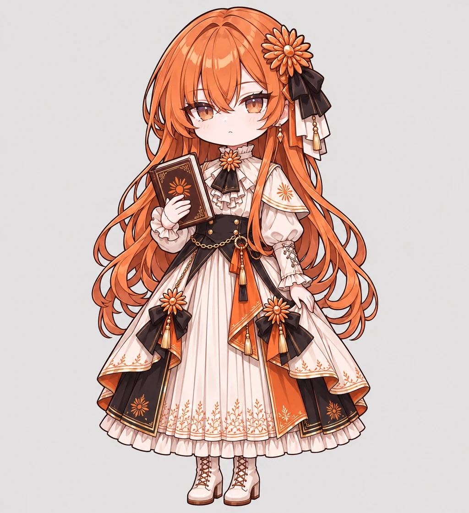
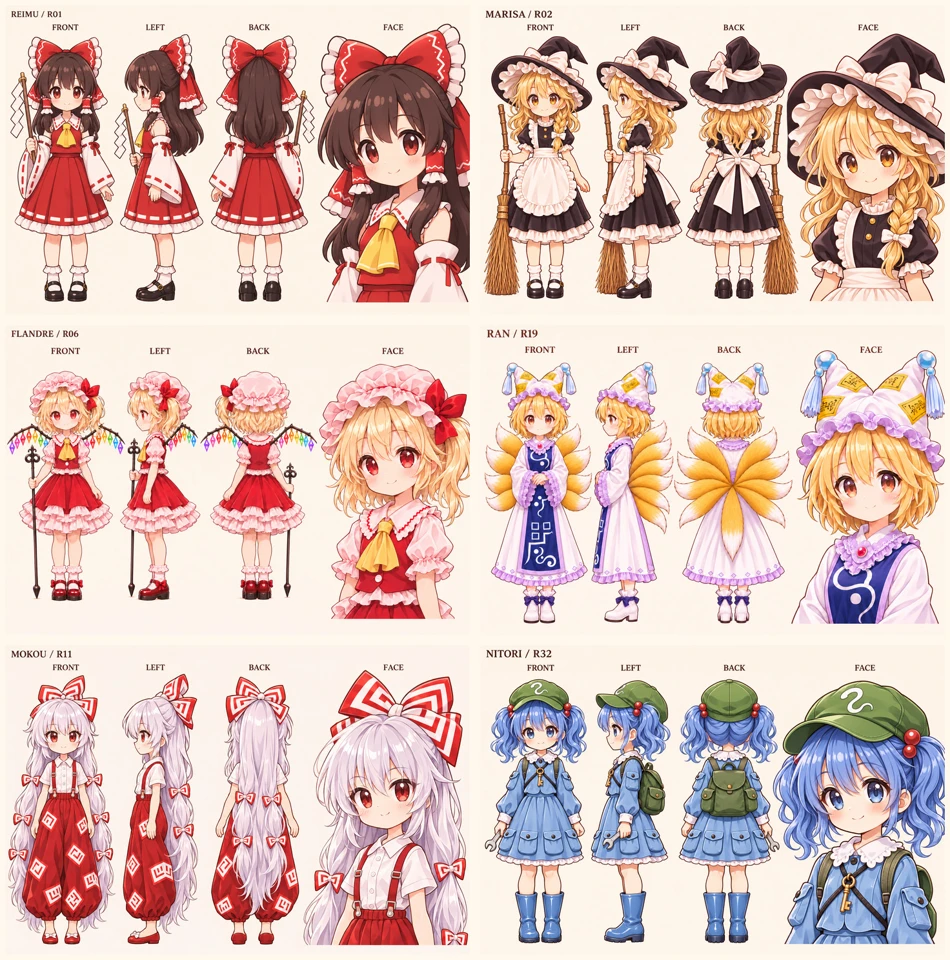
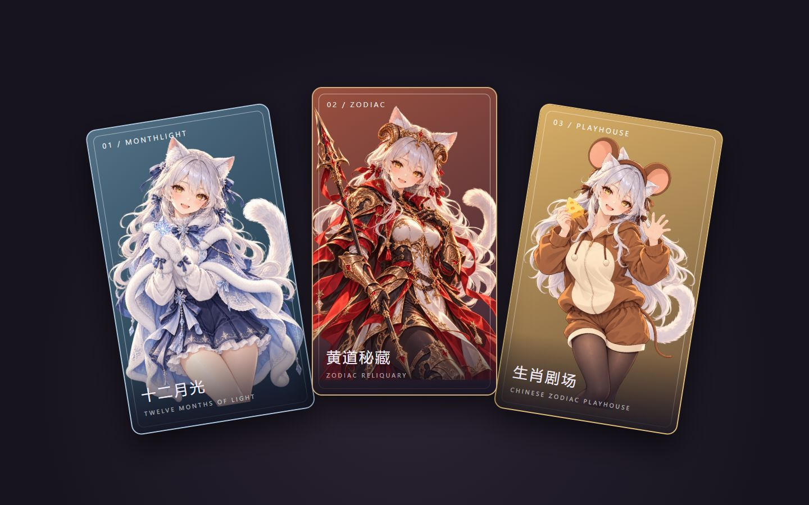
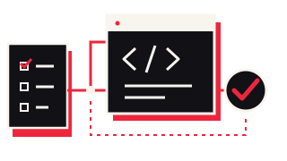

角色图鉴

预览暂不可用作品介绍与入口仍可使用AI 角色图鉴
收藏十位 AI 拟人角色的 Q 版、常规版与真人演绎，浏览设定图和造型来源。
PROJECT INDEX
从想法到作品，记录每一次动手实践。
SELECTED WORK / 项目记录

预览暂不可用作品介绍与入口仍可使用收藏十位 AI 拟人角色的 Q 版、常规版与真人演绎，浏览设定图和造型来源。

预览暂不可用作品介绍与入口仍可使用按角色查找动漫设定图与 Q 版循环动图，预览、单个保存或整包下载。

预览暂不可用作品介绍与入口仍可使用小栖的数字卡片收藏：十二月光、黄道秘藏与生肖剧场。在线欣赏，也能下载离线收藏。
戴着黄金像素 Q 的蓝黄小猫。看看它眨眼、挥爪和转头，也可以下载宠物素材。

预览暂不可用作品介绍与入口仍可使用给 AI 编程助手用的项目工作流：用文件记录任务状态，把恢复进度、检查与复盘接起来。开源测试版，附安装指南。